Հեռախոսային տեղեկատու
Առաջին անհրաժեշտության հեռախոսահամարներ
Հատուկ ծառայություններ
ԹԵԺ ԳԻԾ
Այլ ծառայություններ
Անհրաժեշտ հեռախոսահամարներ
Հեռահաղորդակցություն
Ֆիքսված կապ
Հայաստանի միջազգային կոդն է՝ +374
Հայաստանից արտերկիր զանգելու ձևաչափը՝
00 + երկրի կոդ + քաղաքի կոդ + հեռախոսահամար
Երևանի քաղաքային կոդը՝ 010։
Երևանում քաղաքային համարը բջջայինից հավաքելու համար նախ անհրաժեշտ է հավաքել 010, ապա՝ տվյալ համարը։
Բջջային կապ
Հայաստանի տարածքում բջջային կապն ու շարժական ինտերնետը մատուցվում են երեք օպերատորների կողմից՝
Բջջային օպերատորներ
| Օպերատորներ | Կոդեր |
| VivaCell-MTS | 77, 93, 94, 98 |
| Team Telecom | 33, 43, 91, 96, 99 |
| Ucom | 41, 44, 55, 95 |
SIM քարտեր կարելի է ձեռք բերել Զվարթնոց օդանավակայանում, օպերատորների սպասարկման կենտրոններում կամ խոշոր խանութներից՝ անձնագրի պատճենով։ Բոլոր քարտերն ապահովում են 3G կապ և բարձր արագության ինտերնետ։
Team Telecom Armenia
Հեռ. 100, 109, (010) 28 41 50, (010) 28 90 31
Կոդեր՝ 043, 091, 096, 099, 033
Կայք՝ www.telecomarmenia.am
Միջազգային զանգեր՝ *88* 00 + երկրի կոդ + հեռախոսահամար
www.telecomarmenia.am
Սպասարկման կենտրոն՝ Երևան, Ամիրյան փողոց
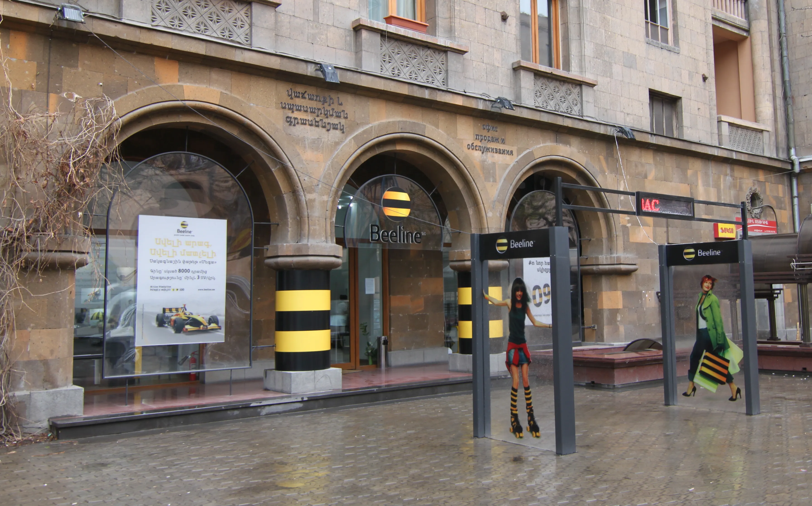
VivaCell-MTS
Հեռ. 111, (010) 56 87 77, (093) 29 71 11
Կոդեր՝ 077, 093, 094, 098, 033
Կայք՝ www.vivacell.am
Միջազգային զանգեր՝ *77* 00 + երկրի կոդ + հեռախոսահամար
Ծառայությունների կառավարման կոդ՝ *130# և սեղմել զանգի կոճակը՝ հետևելով հրահանգներին www.vivacell.am
Վիվա Սել - Կենտրոնական գրասենյակ Հասցե՝ Երևանի, Մաշտոցի պողոտա 10, Հեռախոս՝ +374 77 000 000 (օրինակ) Աշխատանքային ժամեր՝ Երկուշաբթի-Ուրբաթ՝ 09:00–18:00
Ucom
Հեռ. 555, (055) 00 05 55
Կոդեր՝ 055, 095, 041, 044
Կայք՝ www.ucom.am
Միջազգային զանգեր՝ 00 + երկրի կոդ + հեռախոսահամար (առանց լրացուցիչ կոդերի)
Քարտերի ձեռքբերում՝ սպասարկման սրահներում, Հայփոստում, խանութներում
Կանխավճարային քարտեր վաճառվում են Ucom սպասարկման սրահներում, Հայփոստի մասնաճյուղերում, Երևանի City սուպերմարկետներում, Mobile Centre խանութներում և այլ վայրերում։
Ucom-ն առաջարկում է միջազգային րոպեների փաթեթներ՝ ԱՄՆ, Կանադա, Սիրիա և եվրոպական այլ երկրներ զանգելու համար մատչելի սակագներով։
www.ucom.am
Գրասենյակներ՝ Հյուսիսային պողոտա (Երևան), Արաբկիրի սպասարկման կենտրոն և այլն
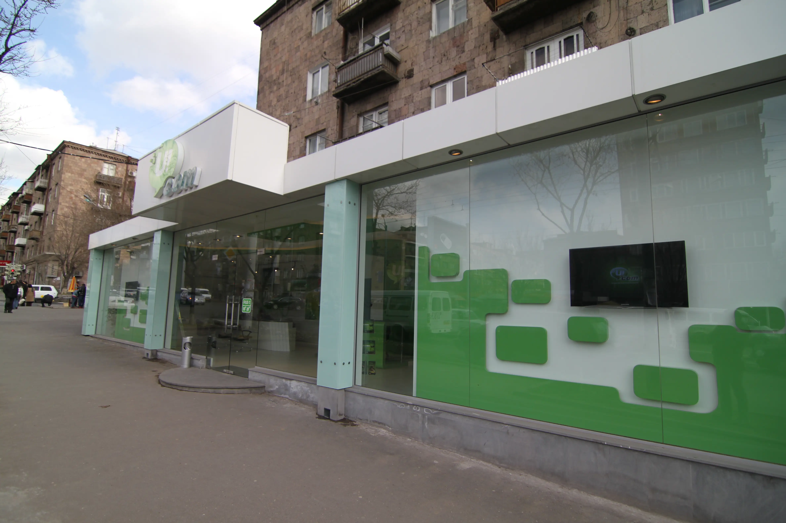
Փոստային ծառայություն
Հայփոստ ՓԲԸ-ն Հայաստանի ազգային փոստային օպերատորն է, որն առաջարկում է փոստային, ֆինանսական և մանրածախ ծառայություններ։ Այս ծառայությունները մատուցվում են ավելի քան 900 փոստային բաժանմունքների միջոցով, որոնք գործում են ՀՀ բոլոր քաղաքներում և գյուղական համայնքներում։
Ընդհանուր տեղեկություն
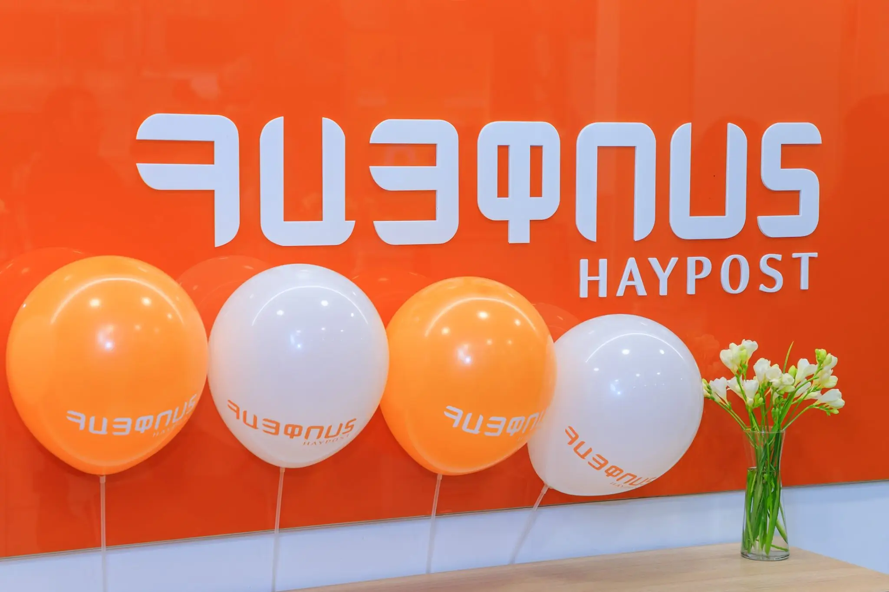
Նորարարություններ
YES ծառայություն (Yerevan Express Service)
Shipex ծառայություն
Ծառայություններ
«Սպրինտ» առաքման ծառայություն (ներհանրապետական, մինչև 2կգ)
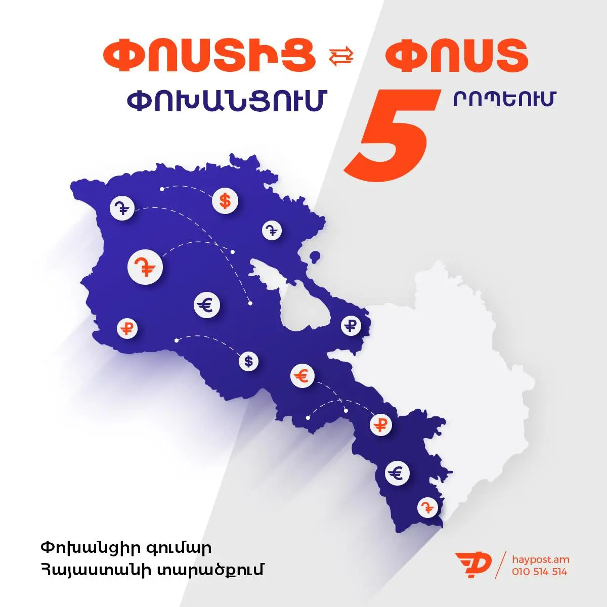
Մասնաճյուղերի ցանց
Հիմնական գրասենյակներ
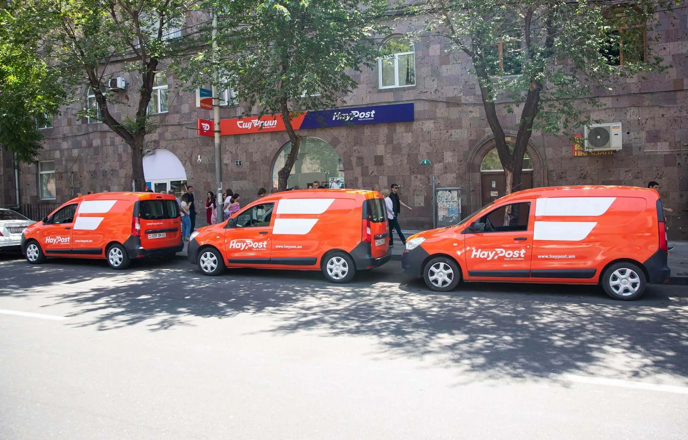
Տեղեկատու ծառայություն
Տրանսպորտ
Երկաթուղային տրանսպորտ
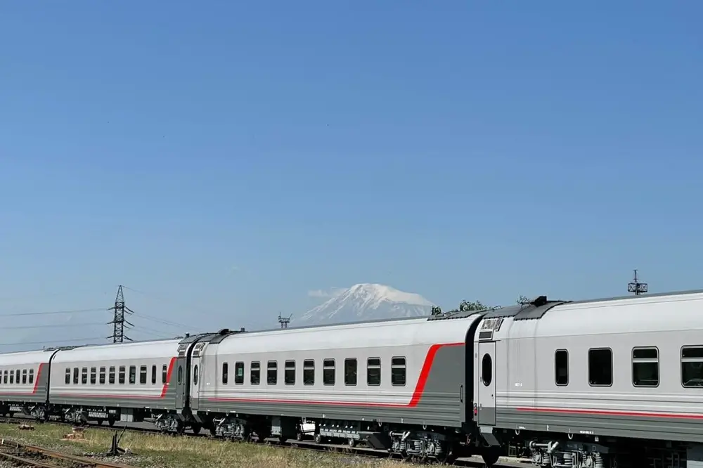
Ընդհանուր տեղեկություն
Հայաստանի Հանրապետության երկաթուղային տրանսպորտի հնագույն և խոշորագույն կենտրոնը Գյումրիի երկաթուղային հանգույցն է, հիմնված 1897 թվականին։ Առաջին գնացքը՝ Թիֆլիսից Ալեքսանդրապոլ (այժմ՝ Գյումրի), ժամանել է 1899 թվականի փետրվարի 7-ին՝ անցնելով 180 կմ ճանապարհ։
Որպես ծովի ելք չունեցող և ծովի մակերևույթից միջինում 1800 մ բարձրությամբ տեղակայված երկիր՝ Հայաստանը երկաթուղային կապի կարիք ունի հատկապես տնտեսական ու ռազմավարական առումով։
2008թ. հունիսի 1-ից «Հարավկովկասյան երկաթուղի» ՓԲԸ-ն, որը հանդիսանում է Ռուսական երկաթուղու դուստր ձեռնարկությունը, իրականացնում է Հայաստանի երկաթուղային համակարգի կառավարումը։ Ներկայումս երկաթուղային ցանցի ընդհանուր երկարությունը կազմում է շուրջ 725 կմ , ներառում է 73 կայարան, որոնցից ակտիվ են 69-ը։ Գործում են երեք լոկոմոտիվային և երկու վագոնային դեպոներ, իրականացվում է ուղևորափոխադրություն և բեռնափոխադրություն։
Միջպետական հաղորդակցության 4 երկաթուղային անցումներից ներկայումս գործում է միայն Այրում–Սադախլո հատվածը՝ Վրաստանի հետ։ Մյուս երեք ուղղությունները՝ Ախուրյան–Դողուքափը (Թուրքիա), Երասխ–Վելիդաղը (Ադրբեջան) և Իջևան–Ջաֆարլի (Ադրբեջան), փակ են։
Կայարաններ
«Երևան» կայարան
Երևանի երկաթուղային կայարանը հիմնադրվել է 1956 թ., գտնվում է Սասունցի Դավիթ հրապարակում։ Նրան կից գործում է նաև մետրոպոլիտենի «Սասունցի Դավիթ» կայարանը, ինչպես նաև լոկոմոտիվային ու վագոնային դեպոներ։ Օրական միջինում սպասարկվում է շուրջ 1000 ուղևոր, իսկ ամառային սեզոնին՝ մինչև 2000։
Կայարանը գործում է շուրջօրյա, ունի հարմարավետ սպասասրահներ՝ VIP սենյակով, Wi-Fi, բանկոմատով, սուրճի սարքով, հյուրանոցային ամրագրման, ծաղիկների պատվերի և զբոսաշրջային տեղեկատվության ծառայություններով։ Այստեղ գործում է նաև երկաթուղու պատմության թանգարան։
Հասցե՝ Երևան, Տիգրան Մեծի պող. 86
Տոմսարկղ՝ (+374 60) 46 32 84
Սերվիս կենտրոն՝ (+374 60) 46 32 83
Տնօրինություն՝ 060 46 34 32
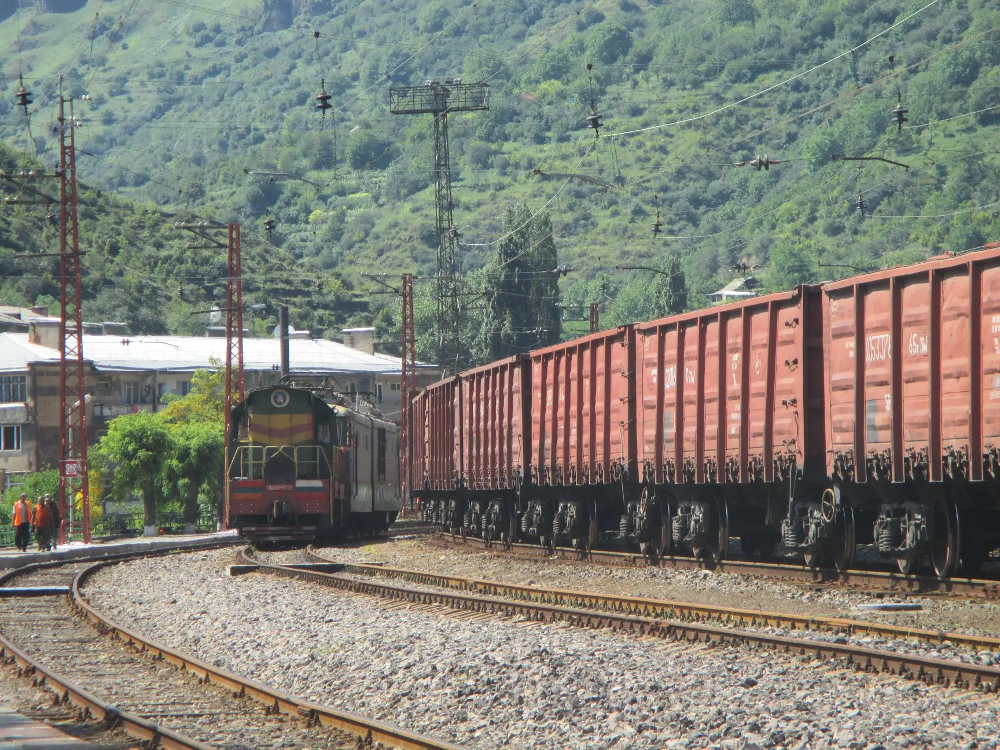
Չվերթներ
Ժամանակակից արագընթաց գնացքները նպաստում են մարզերի ակտիվացմանը։ Այս գնացքները հարմարեցված են սահմանափակ ֆիզիկական հնարավորություններ ունեցող ուղևորների համար և ապահովված են օդափոխման, հակահրդեհային և անվտանգության համակարգերով։
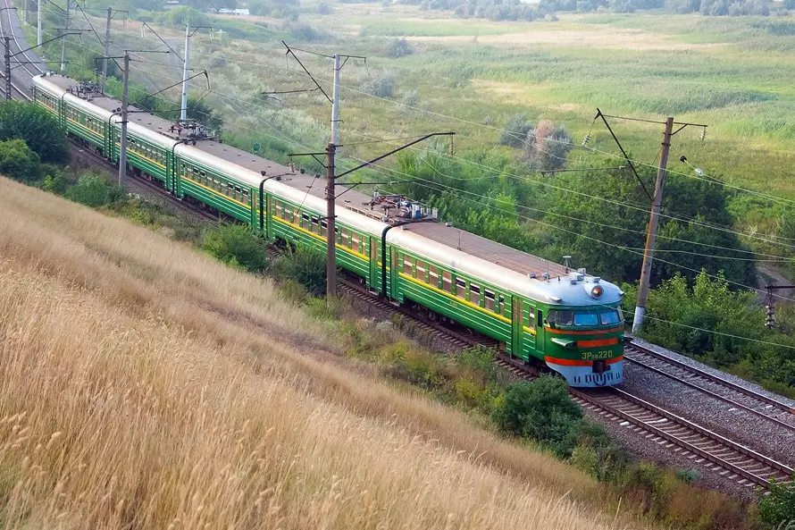
Այլ կայարաններ
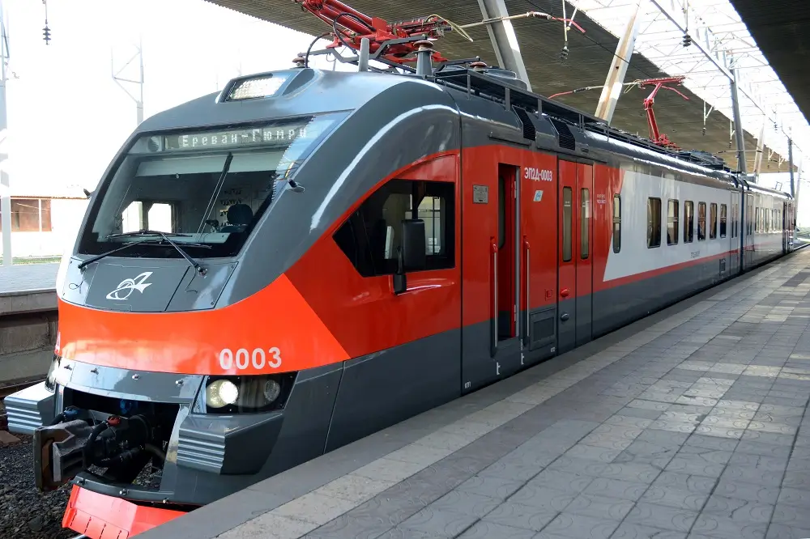
Վանաձորի կայարան
Երկրի երրորդ խոշոր կայարանը։ Գտնվում է Գյումրի–Այրում էլեկտրիֆիկացված գծի վրա։ Այստեղ կանգ են առնում բոլոր միջազգային չվերթները։
Հասցե՝ Վանաձոր, Մոսկովյան փող. 7
+374 322 2 10 09
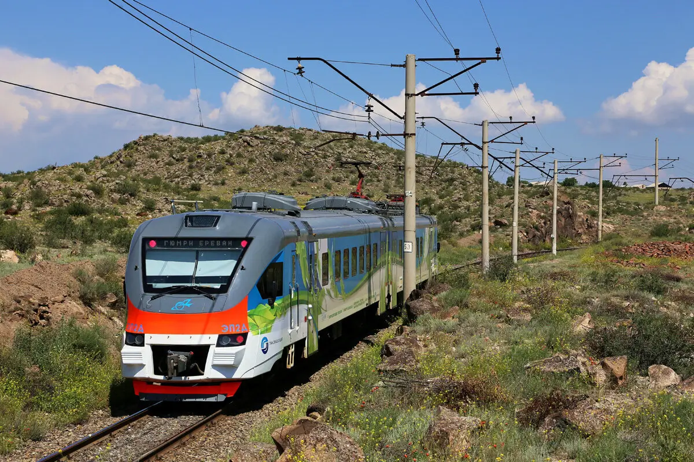
Գյումրիի երկաթուղային հանգույց
Հնագույն և ամենախոշոր հանգույցն է Հայաստանում։ Գործում են դեպոներ, գծի և կապի տեղամասեր։ Ունի արագընթաց ուղևորատար գծեր դեպի Երևան, Վանաձոր, Բաթումի։
Հասցե՝ Գյումրի, Կայարանամերձ հրապարակի 1 շենք
+374 312 5 10 02
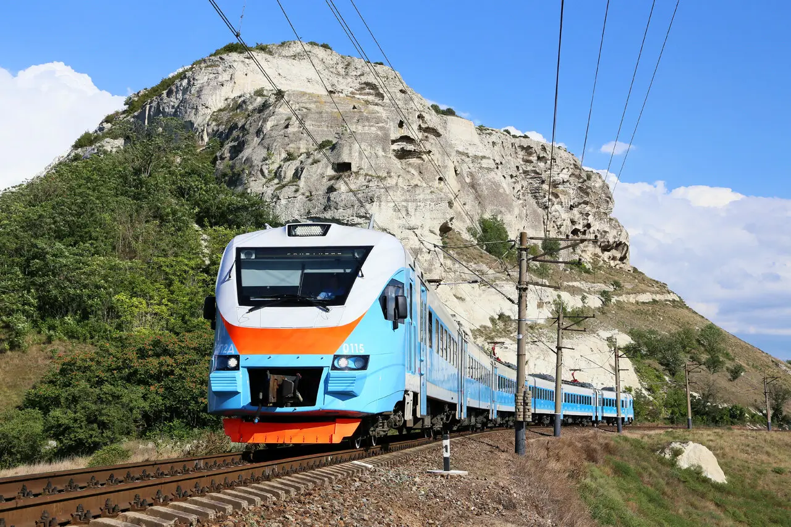
Հրազդան կայարան
Սեզոնային երթուղի՝ Հրազդան – Ալմաստ (Երևան) – Շորժա (Սևան)՝ հարմարեցված ամառային հանգստյան սեզոնին։
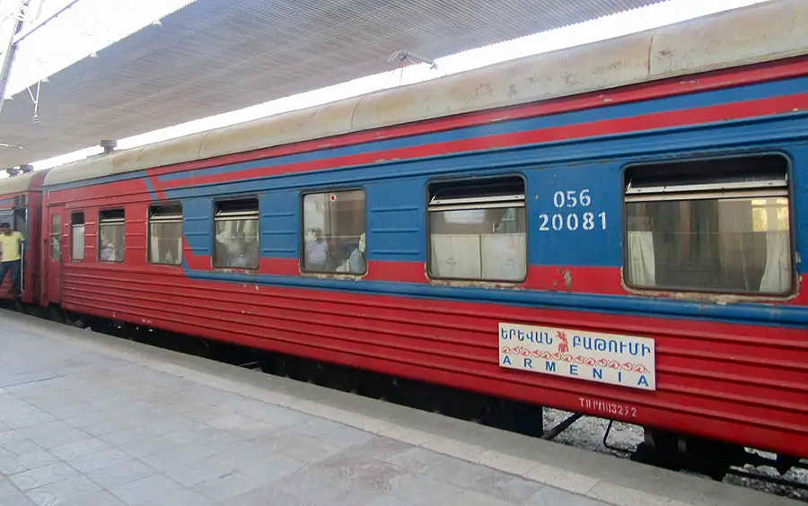
Երասխ կայարան
Վերջին կայարանը ՀՀ տարածքում։ Կայանը փակուղային է՝ ադրբեջանական հատվածը ապամոնտաժվել է 1989-ից հետո։ Գործում է միայն Երասխ–Երևան էլեկտրագնացքը։
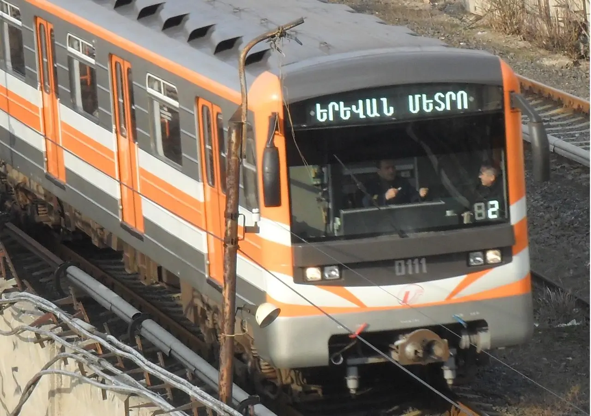
Ալավերդի – Սանահին կայարաններ
Անցնում են միջազգային երթուղիներ (օր. Թբիլիսի–Երևան), սակայն կայարանները հիմնականում կանգ չեն լինում։ Սանահինի կայարանը բացվել է դեռևս 1899-ին։
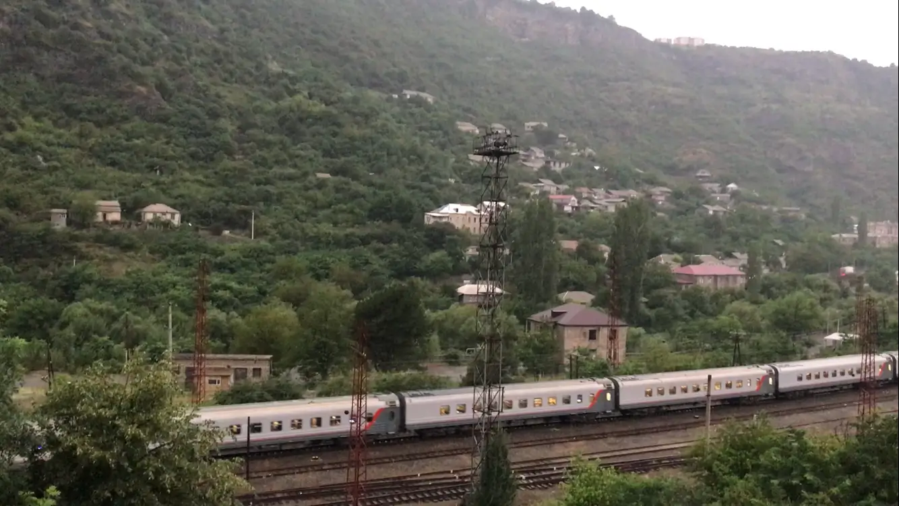
Օդային տրանսպորտ
Հայաստանում գործում են երկու հիմնական օդանավակայաններ՝ «Զվարթնոց» միջազգային օդանավակայանը՝ Երևանի մերձակայքում և «Շիրակ» օդանավակայանը՝ Գյումրիում։ Երկուսն էլ կարևոր դեր ունեն Հայաստանի արտաքին հաղորդակցության և զբոսաշրջային հոսքերի սպասարկման գործում։
Զվարթնոց միջազգային օդանավակայան
«Զվարթնոց» օդանավակայանը գտնվում է մայրաքաղաք Երևանից 12 կմ հեռավորության վրա։ Այն հանդիսանում է Հայաստանի գլխավոր օդային դարպասը՝ սպասարկելով հազարավոր միջազգային չվերթներ։ Վերջին տարիներին օդանավակայանը ենթարկվել է արդիականացման՝ ապահովելով ժամանակակից սարքավորումներով հագեցած, հարմարավետ և անվտանգ միջավայր։
Օդանավակայանը համագործակցում է ավելի քան 30 միջազգային ավիաընկերությունների հետ՝ իրականացնելով թռիչքներ դեպի աշխարհի ավելի քան 50 քաղաքներ, այդ թվում՝ Մոսկվա, Փարիզ, Վիեննա, Պրահա, Հռոմ, Լոնդոն, Դուբայ, Թեհրան, Ստամբուլ և այլուր։
Հասցե՝ Երևան, Զվարթնոց
+374 10 493000
contacts@aia-zvartnots.aero
www.zvartnots.aero
Կա նաև բջջային հավելված՝ Android և iOS համակարգերի համար։
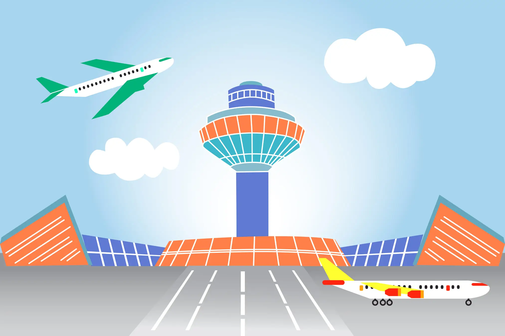
Սպասարկման պայմաններ
Տրանսպորտային հասանելիություն
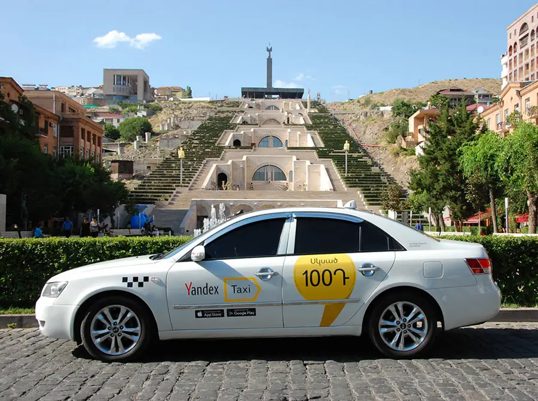
Կայանատեղի
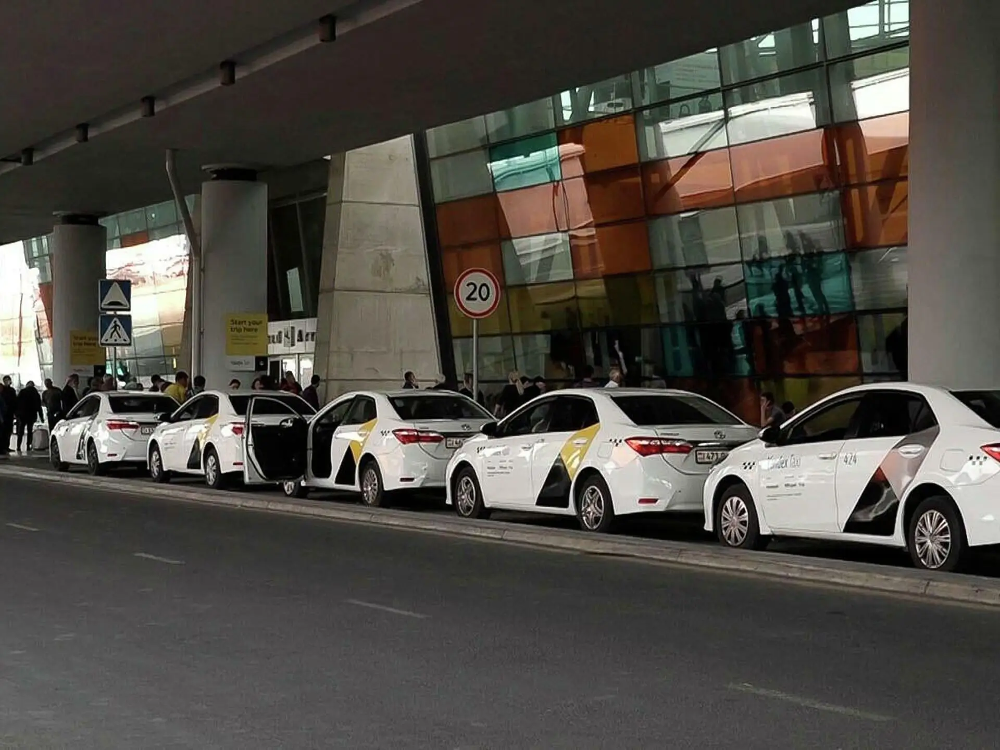
Մուտքի արտոնագրեր (վիզա)
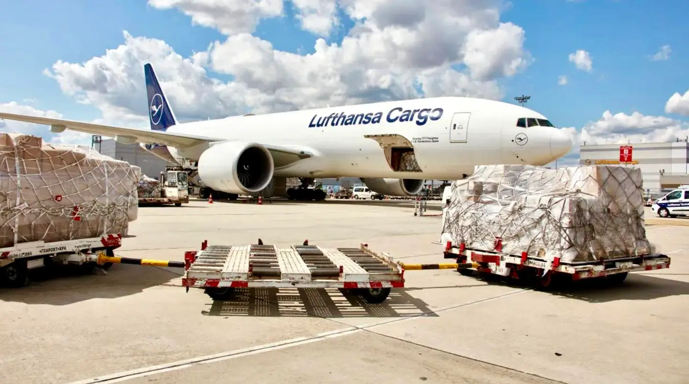
VIP ծառայություններ
Հնարավոր է օգտվել նաև վճարովի VIP սրահից, որն առաջարկում է.
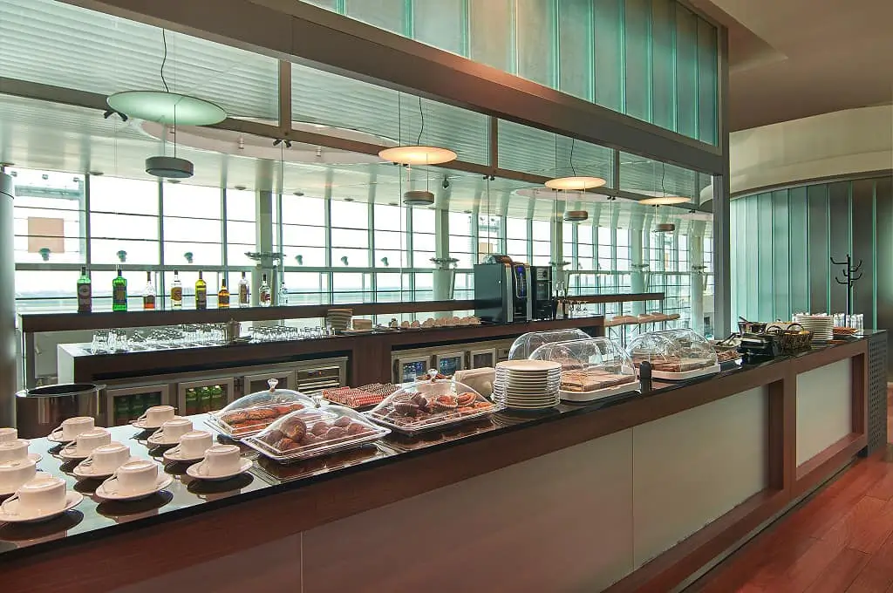
Շիրակ օդանավակայան (Գյումրի)
Գյումրիի «Շիրակ» օդանավակայանը՝ համարվում է Հայաստանի երկրորդ միջազգային օդանավակայանը։ Գտնվում է Գյումրիից 5 կմ, իսկ Երևանից՝ 120 կմ հեռավորության վրա։ Գործում է 1961 թվականից, իսկ 2007-ին վերազինվել է՝ համապատասխանեցված միջազգային չափանիշներին։ Տարածքում տեղադրված են նոր լուսազդանշանային համակարգեր, թռիչքուղու ասֆալտապատում և տեխնիկական սարքավորումներ։
Շիրակի մարզ, Գյումրի
Թռիչքուղու երկարություն՝ 3220 մ, լայնություն՝ 45 մ
Ստացել է ԻԿԱՕ-ի առաջին կարգախմբի օդանավակայանի կարգավիճակ
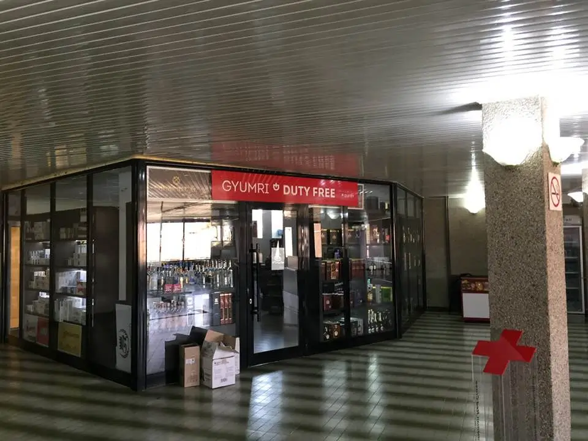
Քաղաքային տրանսպորտ
Հայաստանում, հատկապես Երևանում, գործում է բազմազան հասարակական տրանսպորտ՝ ներառելով ավտոբուսներ, միկրոավտոբուսներ, տրոլեյբուսներ, մետրո, ինչպես նաև տաքսի ծառայություններ։ Այս համակարգը հասանելի է քաղաքի գրեթե բոլոր շրջաններին և համեմատաբար մատչելի է։
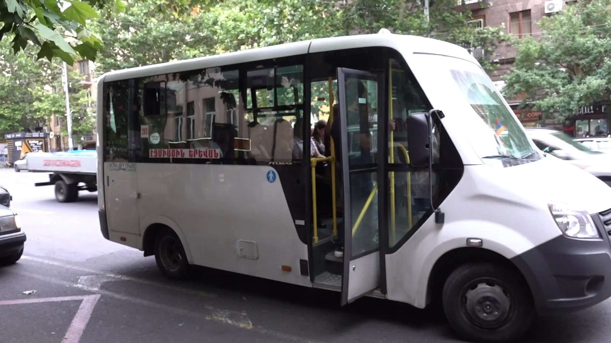
Ավտոբուս
Երևանում գործում են բազմաթիվ ավտոբուսային երթուղիներ, որոնք կապում են քաղաքի ծայրամասերը կենտրոնի հետ։ Ավտոբուսները հիմնականում շարժվում են մայրուղային ուղղություններով։
Ուղեվարձ՝ 100 ՀՀ դրամ
Վճարման համակարգ՝ կանխիկ (հիմնականում), որոշ ավտոբուսներում՝ քարտով
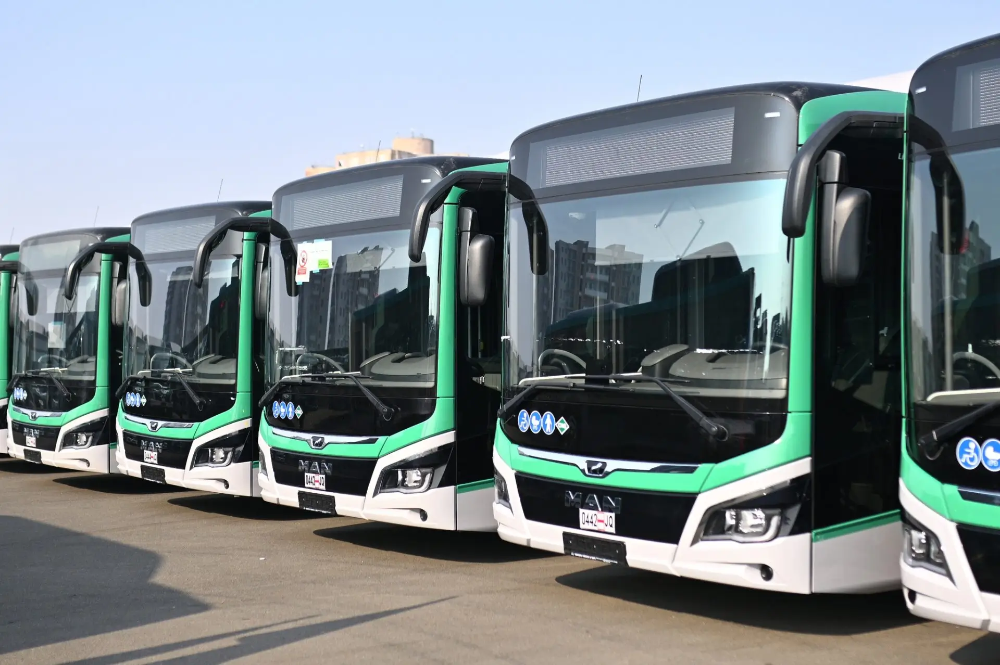
Տրոլեյբուս
Տրոլեյբուսը՝ որպես էկոլոգիապես մաքուր տրանսպորտ, Երևանում գործարկվում է 1949 թվականից։ Խորհրդային տարիներին համակարգը շատ զարգացած էր, սակայն ներկայումս գործում է սահմանափակ՝ 6 երթուղի.
Գծեր՝ 1, 2, 4, 9, 10, 15
Ուղեվարձ՝ 100 ՀՀ դրամ
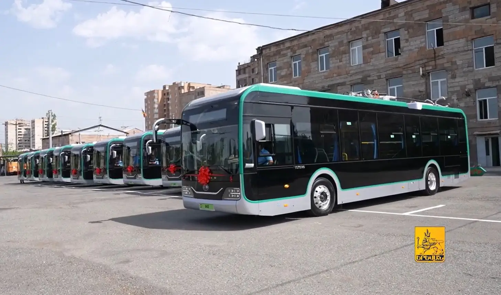
Միկրոավտոբուս
12–15 տեղանոց միկրոավտոբուսները շարժվում են քաղաքի գրեթե բոլոր ուղղություններով և հաճախ օգտագործվում են կարճ ու միջին տարածության ճանապարհորդությունների համար։
Ուղեվարձ՝ 100 ՀՀ դրամ
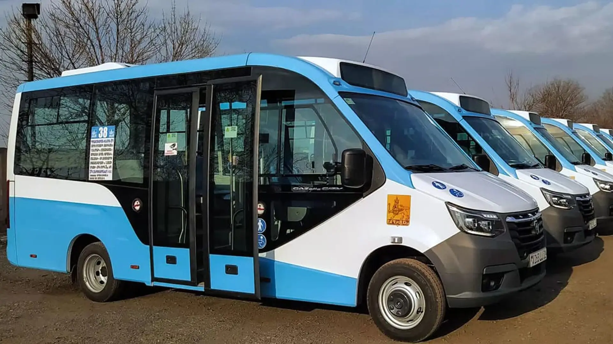
Տաքսի
Տաքսի ծառայություններն Երևանում լայնորեն հասանելի են։ Գործում են ինչպես դասական հեռախոսային պատվերներով աշխատող ծառայություններ, այնպես էլ՝ ժամանակակից օնլայն հարթակներ (օր. Yandex Go, GG Taxi, Utaxi):
Նվազագույն ուղեվարձ՝ 600 դրամ (ներառում է 4 կմ)
Հաջորդող յուրաքանչյուր կմ՝ մոտ 100 դրամ
Պատվեր՝ հեռախոսով կամ հավելվածով
Բոլոր մեքենաները՝ հաշվիչով
Մետրո
Երևանի Կարեն Դեմիրճյանի անվան մետրոպոլիտենը գործում է 1981 թվականից և ներկայումս ունի մեկ գիծ՝ հյուսիսից հարավ ձգվող՝
Կայարանների քանակ՝ 10
Ընդհանուր երկարություն՝ 13.4 կմ
Աշխատանքային ժամեր՝ 06:00 – 23:00
Ուղեվարձ՝ 100 ՀՀ դրամ
Մետրոն ունի մաքուր կայարաններ, բարձր անվտանգության համակարգ և հարմարավետություն։
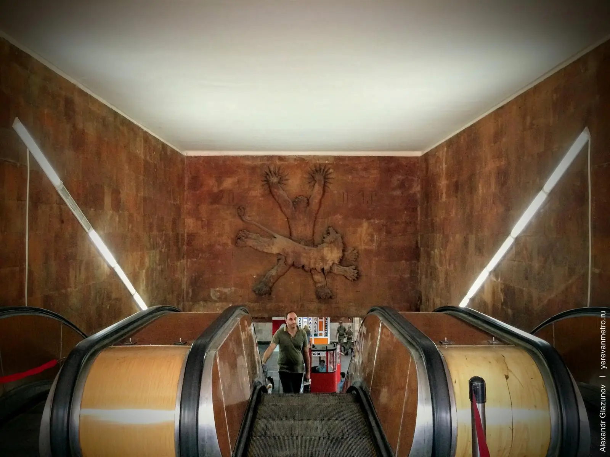
Ճոպանուղի
Ներկայումս Հայաստանի ուղևորատար ճոպանուղիները գործում են մարզերում՝ Տաթևում, Ծաղկաձորում և Ջերմուկում։ Երևանում ճոպանուղի գործել է նախկինում:
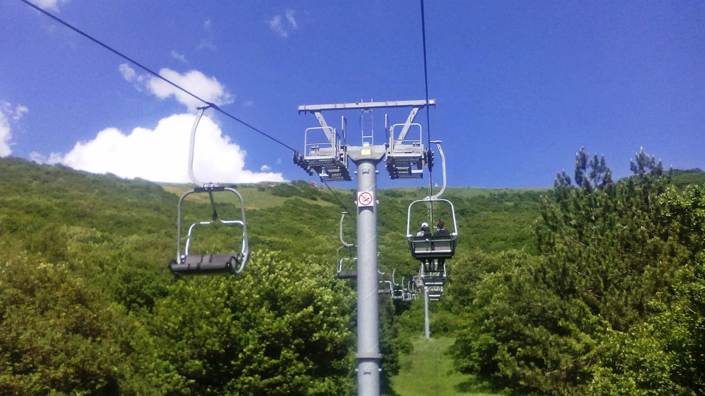
Տաթևի ճոպանուղի («Տաթևեր»)
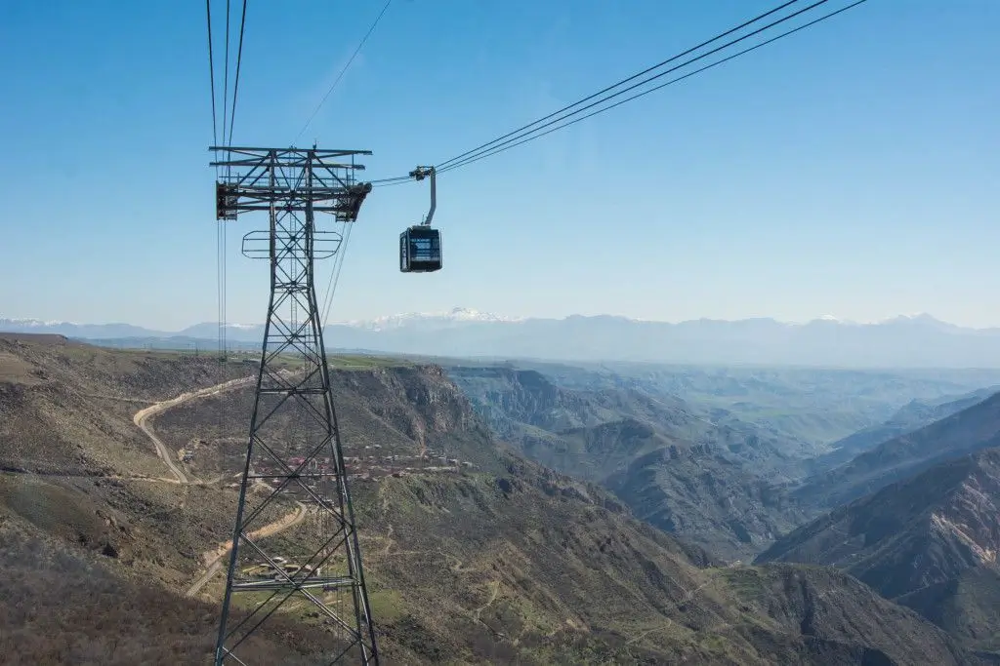
Ծաղկաձորի ճոպանուղի
Ջերմուկի ճոպանուղի
Արժույթ / Բանկեր
Արժույթը Հայաստանում
Հայաստանի ազգային արժույթը դրամն է (AMD)։«Դրամ» բառը առաջացել է հին հունական «դրախմա» (δραχμή) բառից և թարգմանաբար նշանակում է «փող»։ Դրամը շրջանառության մեջ է 1993 թ․ նոյեմբերից՝ փոխարինելով խորհրդային ռուբլին։ Այն ներառում է թղթադրամներ և մետաղադրամներ
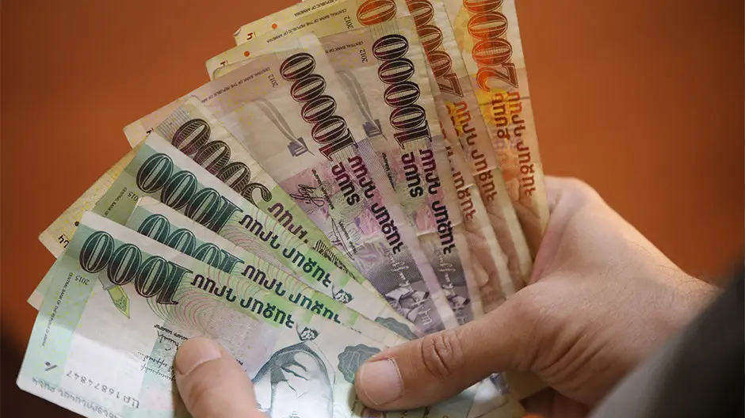
Մետաղադրամներ
10֏ 20֏ 50֏ 100֏ 200֏ 500֏
Այս մետաղադրամները հաճախ կոչվում են կոպեկներ։
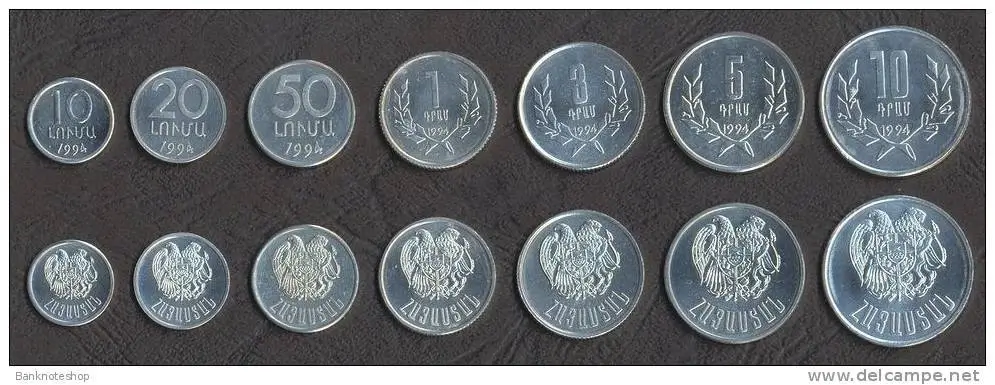
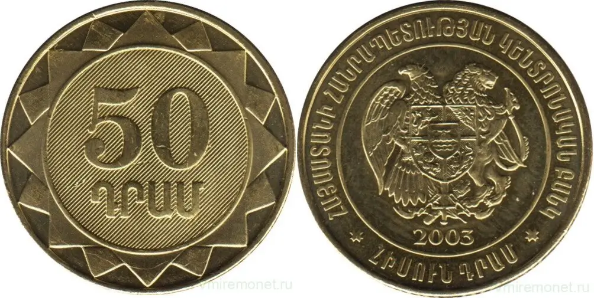
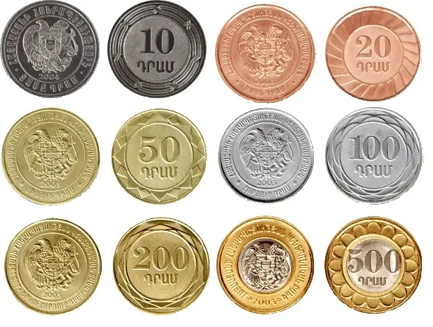
Թղթադրամներ
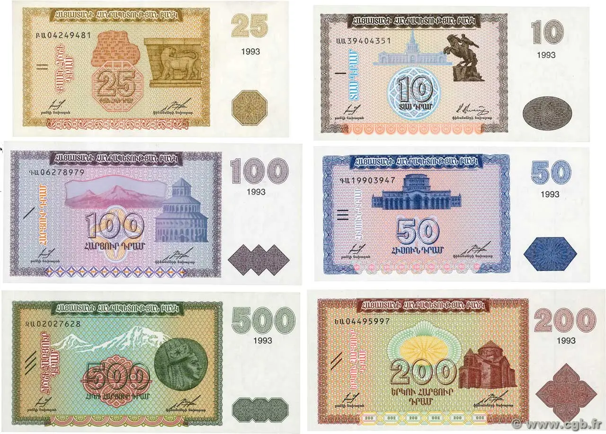
Թղթադրամների անվանական արժեքներն են՝
1000֏
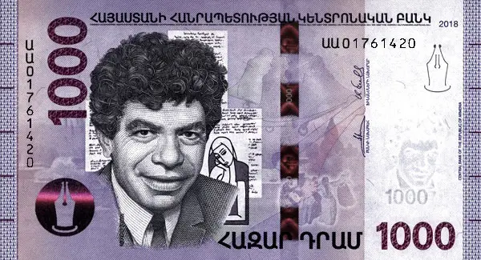
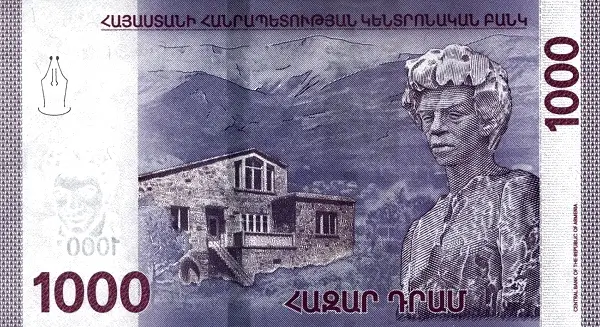
5000֏
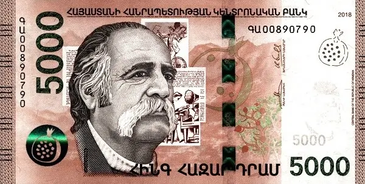
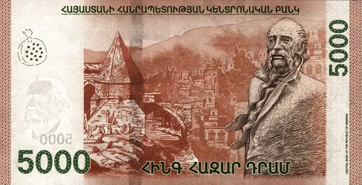
10000֏
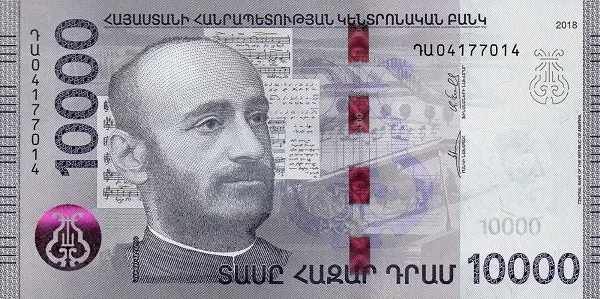
20000֏
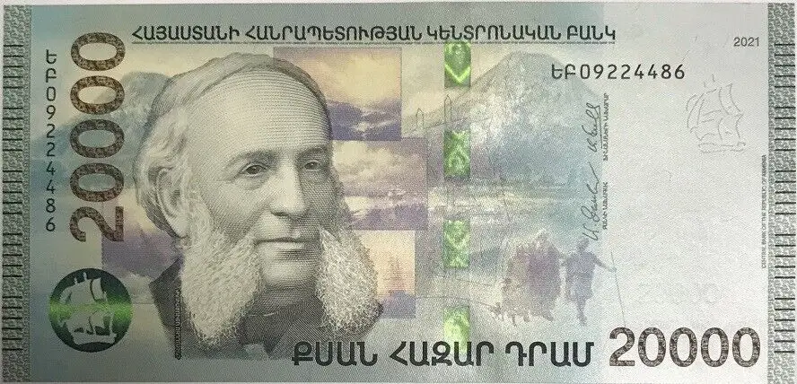
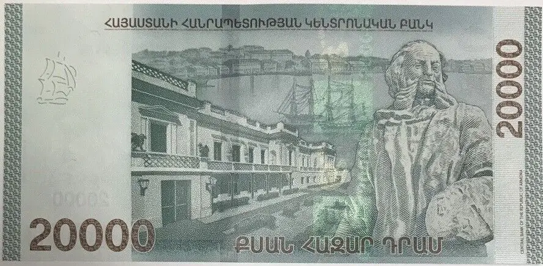
50000֏
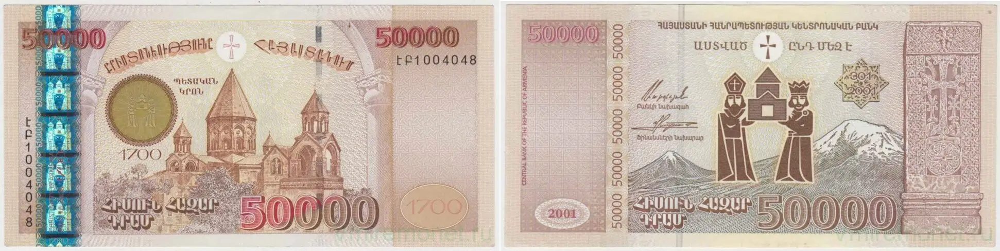
100000֏
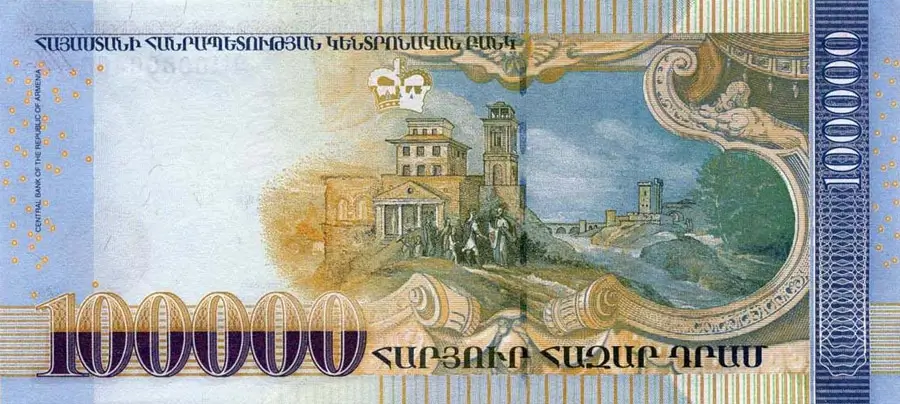
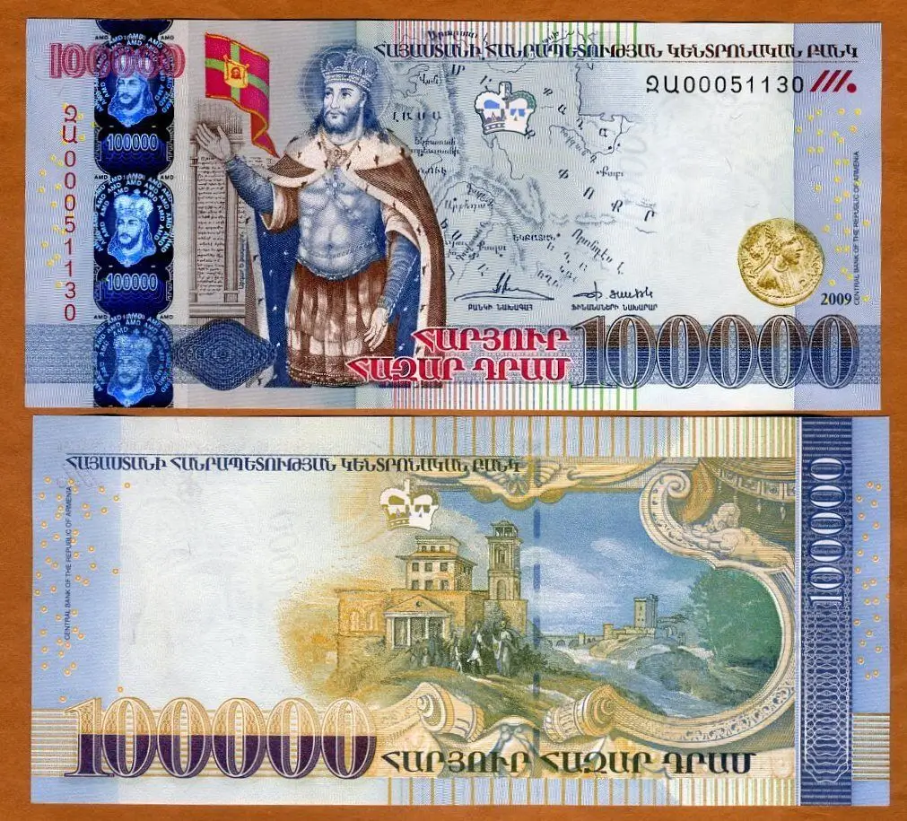
Թղթադրամները տպագրվել են միջազգային առաջատար տպագրատներում և զարդարված են հայտնի հայերի դիմանկարներով ու մշակութային հուշարձաններով։
Փոխարժեքի օրինակներ (մոտավոր)
1 EUR ≈ 411 ֏
1 USD ≈ 386 ֏
1 RUB ≈ 400 ֏
1 GBP ≈ 479 ֏
Թարմ փոխարժեքները կարող եք տեսնել ՀՀ Կենտրոնական բանկի պաշտոնական կայքում՝ www.cba.am
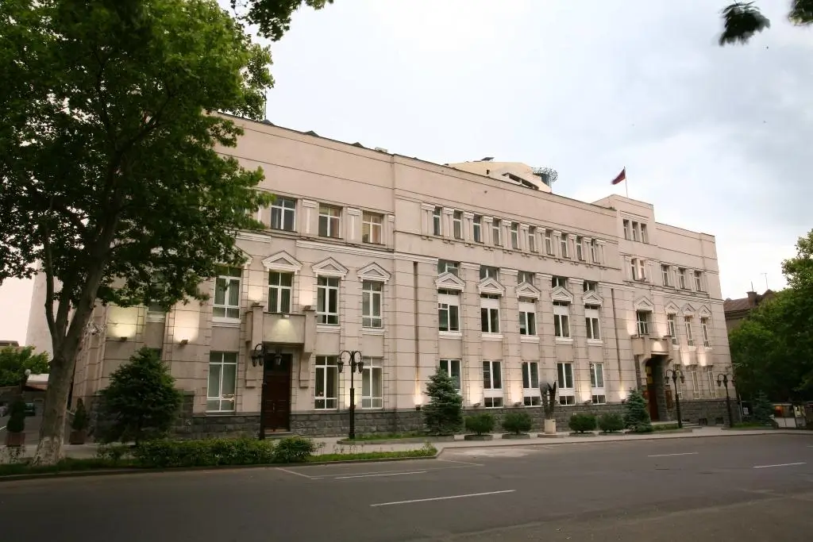
Բանկային համակարգը
Հայաստանում գործում են 17 առևտրային բանկեր, որոնք վերահսկվում են Կենտրոնական բանկի կողմից։Բանկերը հիմնականում բաց են երկուշաբթիից ուրբաթ՝ 09։00–17։00, իսկ որոշ մասնաճյուղեր՝ նաև շաբաթ օրերին կամ շուրջօրյա։
Տարադրամի փոխանակում
Երևանում կարող եք փոխանակել տարադրամ ինչպես բանկերում, այնպես էլ բազմաթիվ «Exchange» կետերում և բանկոմատների միջոցով։
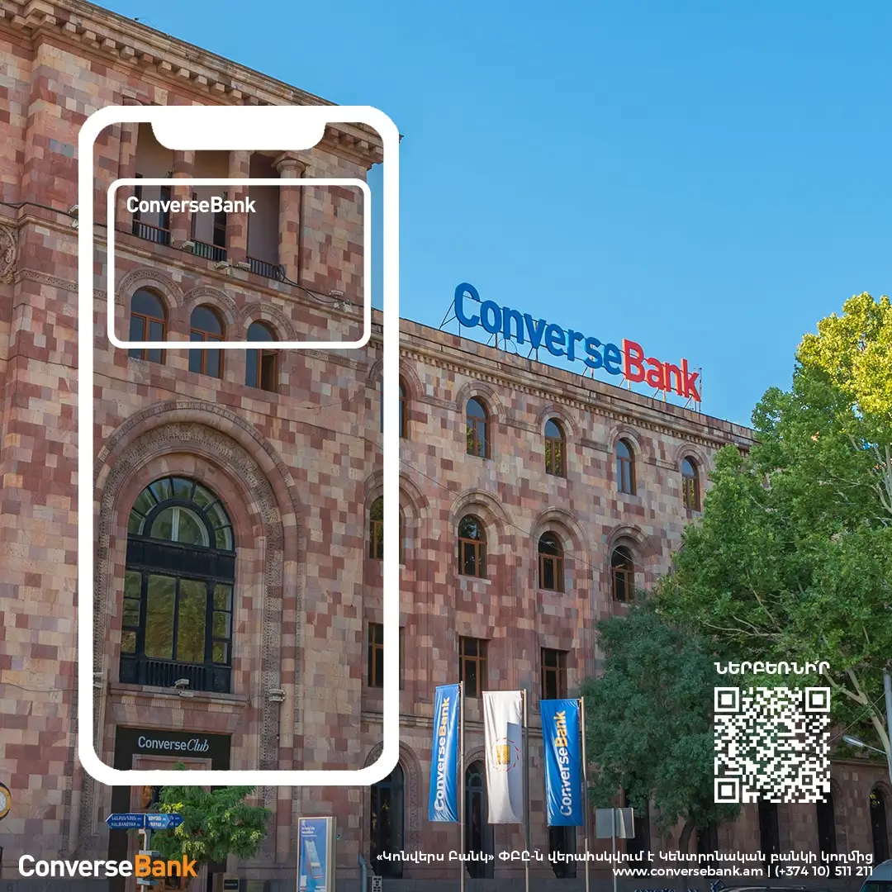